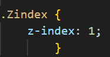

Nessa aula, iremos explorar o método de colocar um elemento sobre o outro e definir a ordem do que ficará sobre.
Isso é feito com o atributo css Z-index:
A numeração do Z-index em ordem descrescente define quem ficará por cima. Ou seja, se o número for maior, esse irá se sobrepor.
Abaixo, pode ser visto a aplicação do Z-index com seus valores ordenando.
Z-index:3;
Z-index:1;
Z-index:2;
Para mais informações sobre Z-index, clique aqui,